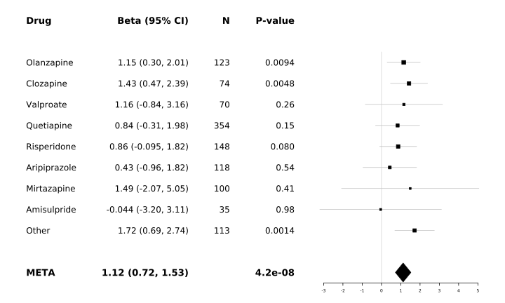
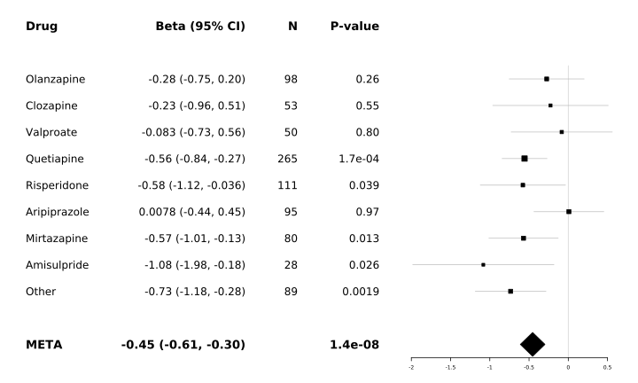

GWAS case only
Last updated: 2021-05-04
Checks: 7 0
Knit directory: PSYMETAB/
This reproducible R Markdown analysis was created with workflowr (version 1.6.0). The Checks tab describes the reproducibility checks that were applied when the results were created. The Past versions tab lists the development history.
Great! Since the R Markdown file has been committed to the Git repository, you know the exact version of the code that produced these results.
Great job! The global environment was empty. Objects defined in the global environment can affect the analysis in your R Markdown file in unknown ways. For reproduciblity it’s best to always run the code in an empty environment.
The command set.seed(20191126) was run prior to running the code in the R Markdown file. Setting a seed ensures that any results that rely on randomness, e.g. subsampling or permutations, are reproducible.
Great job! Recording the operating system, R version, and package versions is critical for reproducibility.
Nice! There were no cached chunks for this analysis, so you can be confident that you successfully produced the results during this run.
Great job! Using relative paths to the files within your workflowr project makes it easier to run your code on other machines.
Great! You are using Git for version control. Tracking code development and connecting the code version to the results is critical for reproducibility. The version displayed above was the version of the Git repository at the time these results were generated.
Note that you need to be careful to ensure that all relevant files for the analysis have been committed to Git prior to generating the results (you can use wflow_publish or wflow_git_commit). workflowr only checks the R Markdown file, but you know if there are other scripts or data files that it depends on. Below is the status of the Git repository when the results were generated:
Ignored files:
Ignored: ._docs
Ignored: .drake/
Ignored: analysis/.Rhistory
Ignored: analysis/._GWAS.Rmd
Ignored: analysis/._data_processing_in_genomestudio.Rmd
Ignored: analysis/._quality_control.Rmd
Ignored: analysis/GWAS/
Ignored: analysis/PRS/
Ignored: analysis/QC/
Ignored: analysis/Rlogo2.png
Ignored: analysis/_drake.R
Ignored: analysis/figure/
Ignored: analysis/rplot.jpg
Ignored: analysis_prep.log
Ignored: analysis_prep_10_clustermq.out
Ignored: analysis_prep_11_clustermq.out
Ignored: analysis_prep_12_clustermq.out
Ignored: analysis_prep_13_clustermq.out
Ignored: analysis_prep_14_clustermq.out
Ignored: analysis_prep_15_clustermq.out
Ignored: analysis_prep_16_clustermq.out
Ignored: analysis_prep_17_clustermq.out
Ignored: analysis_prep_18_clustermq.out
Ignored: analysis_prep_19_clustermq.out
Ignored: analysis_prep_1_clustermq.out
Ignored: analysis_prep_20_clustermq.out
Ignored: analysis_prep_21_clustermq.out
Ignored: analysis_prep_22_clustermq.out
Ignored: analysis_prep_23_clustermq.out
Ignored: analysis_prep_24_clustermq.out
Ignored: analysis_prep_25_clustermq.out
Ignored: analysis_prep_26_clustermq.out
Ignored: analysis_prep_27_clustermq.out
Ignored: analysis_prep_28_clustermq.out
Ignored: analysis_prep_29_clustermq.out
Ignored: analysis_prep_2_clustermq.out
Ignored: analysis_prep_30_clustermq.out
Ignored: analysis_prep_31_clustermq.out
Ignored: analysis_prep_32_clustermq.out
Ignored: analysis_prep_33_clustermq.out
Ignored: analysis_prep_34_clustermq.out
Ignored: analysis_prep_35_clustermq.out
Ignored: analysis_prep_36_clustermq.out
Ignored: analysis_prep_37_clustermq.out
Ignored: analysis_prep_38_clustermq.out
Ignored: analysis_prep_39_clustermq.out
Ignored: analysis_prep_3_clustermq.out
Ignored: analysis_prep_40_clustermq.out
Ignored: analysis_prep_4_clustermq.out
Ignored: analysis_prep_5_clustermq.out
Ignored: analysis_prep_6_clustermq.out
Ignored: analysis_prep_7_clustermq.out
Ignored: analysis_prep_8_clustermq.out
Ignored: analysis_prep_9_clustermq.out
Ignored: data/processed/
Ignored: data/raw/
Ignored: download_impute.log
Ignored: extract_sig.log
Ignored: grs.log
Ignored: init_analysis.log
Ignored: init_analysis_10_clustermq.out
Ignored: init_analysis_11_clustermq.out
Ignored: init_analysis_12_clustermq.out
Ignored: init_analysis_13_clustermq.out
Ignored: init_analysis_14_clustermq.out
Ignored: init_analysis_15_clustermq.out
Ignored: init_analysis_16_clustermq.out
Ignored: init_analysis_17_clustermq.out
Ignored: init_analysis_18_clustermq.out
Ignored: init_analysis_19_clustermq.out
Ignored: init_analysis_1_clustermq.out
Ignored: init_analysis_20_clustermq.out
Ignored: init_analysis_2_clustermq.out
Ignored: init_analysis_3_clustermq.out
Ignored: init_analysis_4_clustermq.out
Ignored: init_analysis_5_clustermq.out
Ignored: init_analysis_6_clustermq.out
Ignored: init_analysis_7_clustermq.out
Ignored: init_analysis_8_clustermq.out
Ignored: init_analysis_9_clustermq.out
Ignored: packrat/lib-R/
Ignored: packrat/lib-ext/
Ignored: packrat/lib/
Ignored: plan.log
Ignored: plan_100_clustermq.out
Ignored: plan_101_clustermq.out
Ignored: plan_102_clustermq.out
Ignored: plan_103_clustermq.out
Ignored: plan_104_clustermq.out
Ignored: plan_105_clustermq.out
Ignored: plan_106_clustermq.out
Ignored: plan_107_clustermq.out
Ignored: plan_108_clustermq.out
Ignored: plan_109_clustermq.out
Ignored: plan_10_clustermq.out
Ignored: plan_110_clustermq.out
Ignored: plan_111_clustermq.out
Ignored: plan_112_clustermq.out
Ignored: plan_113_clustermq.out
Ignored: plan_114_clustermq.out
Ignored: plan_115_clustermq.out
Ignored: plan_116_clustermq.out
Ignored: plan_117_clustermq.out
Ignored: plan_118_clustermq.out
Ignored: plan_119_clustermq.out
Ignored: plan_11_clustermq.out
Ignored: plan_120_clustermq.out
Ignored: plan_12_clustermq.out
Ignored: plan_13_clustermq.out
Ignored: plan_14_clustermq.out
Ignored: plan_15_clustermq.out
Ignored: plan_16_clustermq.out
Ignored: plan_17_clustermq.out
Ignored: plan_18_clustermq.out
Ignored: plan_19_clustermq.out
Ignored: plan_1_clustermq.out
Ignored: plan_20_clustermq.out
Ignored: plan_21_clustermq.out
Ignored: plan_22_clustermq.out
Ignored: plan_23_clustermq.out
Ignored: plan_24_clustermq.out
Ignored: plan_25_clustermq.out
Ignored: plan_26_clustermq.out
Ignored: plan_27_clustermq.out
Ignored: plan_28_clustermq.out
Ignored: plan_29_clustermq.out
Ignored: plan_2_clustermq.out
Ignored: plan_30_clustermq.out
Ignored: plan_31_clustermq.out
Ignored: plan_32_clustermq.out
Ignored: plan_33_clustermq.out
Ignored: plan_34_clustermq.out
Ignored: plan_35_clustermq.out
Ignored: plan_36_clustermq.out
Ignored: plan_37_clustermq.out
Ignored: plan_38_clustermq.out
Ignored: plan_39_clustermq.out
Ignored: plan_3_clustermq.out
Ignored: plan_40_clustermq.out
Ignored: plan_41_clustermq.out
Ignored: plan_42_clustermq.out
Ignored: plan_43_clustermq.out
Ignored: plan_44_clustermq.out
Ignored: plan_45_clustermq.out
Ignored: plan_46_clustermq.out
Ignored: plan_47_clustermq.out
Ignored: plan_48_clustermq.out
Ignored: plan_49_clustermq.out
Ignored: plan_4_clustermq.out
Ignored: plan_50_clustermq.out
Ignored: plan_51_clustermq.out
Ignored: plan_52_clustermq.out
Ignored: plan_53_clustermq.out
Ignored: plan_54_clustermq.out
Ignored: plan_55_clustermq.out
Ignored: plan_56_clustermq.out
Ignored: plan_57_clustermq.out
Ignored: plan_58_clustermq.out
Ignored: plan_59_clustermq.out
Ignored: plan_5_clustermq.out
Ignored: plan_60_clustermq.out
Ignored: plan_61_clustermq.out
Ignored: plan_62_clustermq.out
Ignored: plan_63_clustermq.out
Ignored: plan_64_clustermq.out
Ignored: plan_65_clustermq.out
Ignored: plan_66_clustermq.out
Ignored: plan_67_clustermq.out
Ignored: plan_68_clustermq.out
Ignored: plan_69_clustermq.out
Ignored: plan_6_clustermq.out
Ignored: plan_70_clustermq.out
Ignored: plan_71_clustermq.out
Ignored: plan_72_clustermq.out
Ignored: plan_73_clustermq.out
Ignored: plan_74_clustermq.out
Ignored: plan_75_clustermq.out
Ignored: plan_76_clustermq.out
Ignored: plan_77_clustermq.out
Ignored: plan_78_clustermq.out
Ignored: plan_79_clustermq.out
Ignored: plan_7_clustermq.out
Ignored: plan_80_clustermq.out
Ignored: plan_81_clustermq.out
Ignored: plan_82_clustermq.out
Ignored: plan_83_clustermq.out
Ignored: plan_84_clustermq.out
Ignored: plan_85_clustermq.out
Ignored: plan_86_clustermq.out
Ignored: plan_87_clustermq.out
Ignored: plan_88_clustermq.out
Ignored: plan_89_clustermq.out
Ignored: plan_8_clustermq.out
Ignored: plan_90_clustermq.out
Ignored: plan_91_clustermq.out
Ignored: plan_92_clustermq.out
Ignored: plan_93_clustermq.out
Ignored: plan_94_clustermq.out
Ignored: plan_95_clustermq.out
Ignored: plan_96_clustermq.out
Ignored: plan_97_clustermq.out
Ignored: plan_98_clustermq.out
Ignored: plan_99_clustermq.out
Ignored: plan_9_clustermq.out
Ignored: process_init.log
Ignored: process_init_100_clustermq.out
Ignored: process_init_101_clustermq.out
Ignored: process_init_102_clustermq.out
Ignored: process_init_103_clustermq.out
Ignored: process_init_104_clustermq.out
Ignored: process_init_105_clustermq.out
Ignored: process_init_106_clustermq.out
Ignored: process_init_107_clustermq.out
Ignored: process_init_108_clustermq.out
Ignored: process_init_109_clustermq.out
Ignored: process_init_10_clustermq.out
Ignored: process_init_110_clustermq.out
Ignored: process_init_111_clustermq.out
Ignored: process_init_112_clustermq.out
Ignored: process_init_113_clustermq.out
Ignored: process_init_114_clustermq.out
Ignored: process_init_115_clustermq.out
Ignored: process_init_116_clustermq.out
Ignored: process_init_117_clustermq.out
Ignored: process_init_118_clustermq.out
Ignored: process_init_119_clustermq.out
Ignored: process_init_11_clustermq.out
Ignored: process_init_120_clustermq.out
Ignored: process_init_12_clustermq.out
Ignored: process_init_13_clustermq.out
Ignored: process_init_14_clustermq.out
Ignored: process_init_15_clustermq.out
Ignored: process_init_16_clustermq.out
Ignored: process_init_17_clustermq.out
Ignored: process_init_18_clustermq.out
Ignored: process_init_19_clustermq.out
Ignored: process_init_1_clustermq.out
Ignored: process_init_20_clustermq.out
Ignored: process_init_21_clustermq.out
Ignored: process_init_22_clustermq.out
Ignored: process_init_23_clustermq.out
Ignored: process_init_24_clustermq.out
Ignored: process_init_25_clustermq.out
Ignored: process_init_26_clustermq.out
Ignored: process_init_27_clustermq.out
Ignored: process_init_28_clustermq.out
Ignored: process_init_29_clustermq.out
Ignored: process_init_2_clustermq.out
Ignored: process_init_30_clustermq.out
Ignored: process_init_31_clustermq.out
Ignored: process_init_32_clustermq.out
Ignored: process_init_33_clustermq.out
Ignored: process_init_34_clustermq.out
Ignored: process_init_35_clustermq.out
Ignored: process_init_36_clustermq.out
Ignored: process_init_37_clustermq.out
Ignored: process_init_38_clustermq.out
Ignored: process_init_39_clustermq.out
Ignored: process_init_3_clustermq.out
Ignored: process_init_40_clustermq.out
Ignored: process_init_41_clustermq.out
Ignored: process_init_42_clustermq.out
Ignored: process_init_43_clustermq.out
Ignored: process_init_44_clustermq.out
Ignored: process_init_45_clustermq.out
Ignored: process_init_46_clustermq.out
Ignored: process_init_47_clustermq.out
Ignored: process_init_48_clustermq.out
Ignored: process_init_49_clustermq.out
Ignored: process_init_4_clustermq.out
Ignored: process_init_50_clustermq.out
Ignored: process_init_51_clustermq.out
Ignored: process_init_52_clustermq.out
Ignored: process_init_53_clustermq.out
Ignored: process_init_54_clustermq.out
Ignored: process_init_55_clustermq.out
Ignored: process_init_56_clustermq.out
Ignored: process_init_57_clustermq.out
Ignored: process_init_58_clustermq.out
Ignored: process_init_59_clustermq.out
Ignored: process_init_5_clustermq.out
Ignored: process_init_60_clustermq.out
Ignored: process_init_61_clustermq.out
Ignored: process_init_62_clustermq.out
Ignored: process_init_63_clustermq.out
Ignored: process_init_64_clustermq.out
Ignored: process_init_65_clustermq.out
Ignored: process_init_66_clustermq.out
Ignored: process_init_67_clustermq.out
Ignored: process_init_68_clustermq.out
Ignored: process_init_69_clustermq.out
Ignored: process_init_6_clustermq.out
Ignored: process_init_70_clustermq.out
Ignored: process_init_71_clustermq.out
Ignored: process_init_72_clustermq.out
Ignored: process_init_73_clustermq.out
Ignored: process_init_74_clustermq.out
Ignored: process_init_75_clustermq.out
Ignored: process_init_76_clustermq.out
Ignored: process_init_77_clustermq.out
Ignored: process_init_78_clustermq.out
Ignored: process_init_79_clustermq.out
Ignored: process_init_7_clustermq.out
Ignored: process_init_80_clustermq.out
Ignored: process_init_81_clustermq.out
Ignored: process_init_82_clustermq.out
Ignored: process_init_83_clustermq.out
Ignored: process_init_84_clustermq.out
Ignored: process_init_85_clustermq.out
Ignored: process_init_86_clustermq.out
Ignored: process_init_87_clustermq.out
Ignored: process_init_88_clustermq.out
Ignored: process_init_89_clustermq.out
Ignored: process_init_8_clustermq.out
Ignored: process_init_90_clustermq.out
Ignored: process_init_91_clustermq.out
Ignored: process_init_92_clustermq.out
Ignored: process_init_93_clustermq.out
Ignored: process_init_94_clustermq.out
Ignored: process_init_95_clustermq.out
Ignored: process_init_96_clustermq.out
Ignored: process_init_97_clustermq.out
Ignored: process_init_98_clustermq.out
Ignored: process_init_99_clustermq.out
Ignored: process_init_9_clustermq.out
Ignored: process_ukbb.log
Ignored: process_ukbb_10_clustermq.out
Ignored: process_ukbb_11_clustermq.out
Ignored: process_ukbb_12_clustermq.out
Ignored: process_ukbb_13_clustermq.out
Ignored: process_ukbb_14_clustermq.out
Ignored: process_ukbb_15_clustermq.out
Ignored: process_ukbb_16_clustermq.out
Ignored: process_ukbb_17_clustermq.out
Ignored: process_ukbb_18_clustermq.out
Ignored: process_ukbb_19_clustermq.out
Ignored: process_ukbb_1_clustermq.out
Ignored: process_ukbb_20_clustermq.out
Ignored: process_ukbb_21_clustermq.out
Ignored: process_ukbb_22_clustermq.out
Ignored: process_ukbb_2_clustermq.out
Ignored: process_ukbb_3_clustermq.out
Ignored: process_ukbb_4_clustermq.out
Ignored: process_ukbb_5_clustermq.out
Ignored: process_ukbb_6_clustermq.out
Ignored: process_ukbb_7_clustermq.out
Ignored: process_ukbb_8_clustermq.out
Ignored: process_ukbb_9_clustermq.out
Ignored: prs.log
Ignored: prs_1_clustermq.out
Ignored: prs_2_clustermq.out
Ignored: prs_3_clustermq.out
Ignored: prs_4_clustermq.out
Ignored: prs_5_clustermq.out
Ignored: prs_6_clustermq.out
Ignored: prs_7_clustermq.out
Ignored: prs_8_clustermq.out
Ignored: ukbb.log
Ignored: ukbb_10_clustermq.out
Ignored: ukbb_11_clustermq.out
Ignored: ukbb_12_clustermq.out
Ignored: ukbb_13_clustermq.out
Ignored: ukbb_14_clustermq.out
Ignored: ukbb_15_clustermq.out
Ignored: ukbb_16_clustermq.out
Ignored: ukbb_17_clustermq.out
Ignored: ukbb_18_clustermq.out
Ignored: ukbb_19_clustermq.out
Ignored: ukbb_1_clustermq.out
Ignored: ukbb_20_clustermq.out
Ignored: ukbb_21_clustermq.out
Ignored: ukbb_22_clustermq.out
Ignored: ukbb_23_clustermq.out
Ignored: ukbb_24_clustermq.out
Ignored: ukbb_2_clustermq.out
Ignored: ukbb_3_clustermq.out
Ignored: ukbb_4_clustermq.out
Ignored: ukbb_5_clustermq.out
Ignored: ukbb_6_clustermq.out
Ignored: ukbb_7_clustermq.out
Ignored: ukbb_8_clustermq.out
Ignored: ukbb_9_clustermq.out
Ignored: ukbb_analysis.log
Ignored: ukbb_analysis_100_clustermq.out
Ignored: ukbb_analysis_101_clustermq.out
Ignored: ukbb_analysis_102_clustermq.out
Ignored: ukbb_analysis_103_clustermq.out
Ignored: ukbb_analysis_104_clustermq.out
Ignored: ukbb_analysis_105_clustermq.out
Ignored: ukbb_analysis_106_clustermq.out
Ignored: ukbb_analysis_107_clustermq.out
Ignored: ukbb_analysis_108_clustermq.out
Ignored: ukbb_analysis_109_clustermq.out
Ignored: ukbb_analysis_10_clustermq.out
Ignored: ukbb_analysis_110_clustermq.out
Ignored: ukbb_analysis_111_clustermq.out
Ignored: ukbb_analysis_112_clustermq.out
Ignored: ukbb_analysis_113_clustermq.out
Ignored: ukbb_analysis_114_clustermq.out
Ignored: ukbb_analysis_115_clustermq.out
Ignored: ukbb_analysis_116_clustermq.out
Ignored: ukbb_analysis_117_clustermq.out
Ignored: ukbb_analysis_118_clustermq.out
Ignored: ukbb_analysis_119_clustermq.out
Ignored: ukbb_analysis_11_clustermq.out
Ignored: ukbb_analysis_120_clustermq.out
Ignored: ukbb_analysis_121_clustermq.out
Ignored: ukbb_analysis_122_clustermq.out
Ignored: ukbb_analysis_123_clustermq.out
Ignored: ukbb_analysis_124_clustermq.out
Ignored: ukbb_analysis_125_clustermq.out
Ignored: ukbb_analysis_126_clustermq.out
Ignored: ukbb_analysis_127_clustermq.out
Ignored: ukbb_analysis_128_clustermq.out
Ignored: ukbb_analysis_129_clustermq.out
Ignored: ukbb_analysis_12_clustermq.out
Ignored: ukbb_analysis_130_clustermq.out
Ignored: ukbb_analysis_131_clustermq.out
Ignored: ukbb_analysis_132_clustermq.out
Ignored: ukbb_analysis_133_clustermq.out
Ignored: ukbb_analysis_134_clustermq.out
Ignored: ukbb_analysis_135_clustermq.out
Ignored: ukbb_analysis_136_clustermq.out
Ignored: ukbb_analysis_137_clustermq.out
Ignored: ukbb_analysis_138_clustermq.out
Ignored: ukbb_analysis_139_clustermq.out
Ignored: ukbb_analysis_13_clustermq.out
Ignored: ukbb_analysis_140_clustermq.out
Ignored: ukbb_analysis_141_clustermq.out
Ignored: ukbb_analysis_142_clustermq.out
Ignored: ukbb_analysis_143_clustermq.out
Ignored: ukbb_analysis_144_clustermq.out
Ignored: ukbb_analysis_145_clustermq.out
Ignored: ukbb_analysis_146_clustermq.out
Ignored: ukbb_analysis_147_clustermq.out
Ignored: ukbb_analysis_148_clustermq.out
Ignored: ukbb_analysis_149_clustermq.out
Ignored: ukbb_analysis_14_clustermq.out
Ignored: ukbb_analysis_150_clustermq.out
Ignored: ukbb_analysis_151_clustermq.out
Ignored: ukbb_analysis_152_clustermq.out
Ignored: ukbb_analysis_153_clustermq.out
Ignored: ukbb_analysis_154_clustermq.out
Ignored: ukbb_analysis_155_clustermq.out
Ignored: ukbb_analysis_156_clustermq.out
Ignored: ukbb_analysis_157_clustermq.out
Ignored: ukbb_analysis_158_clustermq.out
Ignored: ukbb_analysis_159_clustermq.out
Ignored: ukbb_analysis_15_clustermq.out
Ignored: ukbb_analysis_160_clustermq.out
Ignored: ukbb_analysis_16_clustermq.out
Ignored: ukbb_analysis_17_clustermq.out
Ignored: ukbb_analysis_18_clustermq.out
Ignored: ukbb_analysis_19_clustermq.out
Ignored: ukbb_analysis_1_clustermq.out
Ignored: ukbb_analysis_20_clustermq.out
Ignored: ukbb_analysis_21_clustermq.out
Ignored: ukbb_analysis_22_clustermq.out
Ignored: ukbb_analysis_23_clustermq.out
Ignored: ukbb_analysis_24_clustermq.out
Ignored: ukbb_analysis_25_clustermq.out
Ignored: ukbb_analysis_26_clustermq.out
Ignored: ukbb_analysis_27_clustermq.out
Ignored: ukbb_analysis_28_clustermq.out
Ignored: ukbb_analysis_29_clustermq.out
Ignored: ukbb_analysis_2_clustermq.out
Ignored: ukbb_analysis_30_clustermq.out
Ignored: ukbb_analysis_31_clustermq.out
Ignored: ukbb_analysis_32_clustermq.out
Ignored: ukbb_analysis_33_clustermq.out
Ignored: ukbb_analysis_34_clustermq.out
Ignored: ukbb_analysis_35_clustermq.out
Ignored: ukbb_analysis_36_clustermq.out
Ignored: ukbb_analysis_37_clustermq.out
Ignored: ukbb_analysis_38_clustermq.out
Ignored: ukbb_analysis_39_clustermq.out
Ignored: ukbb_analysis_3_clustermq.out
Ignored: ukbb_analysis_40_clustermq.out
Ignored: ukbb_analysis_41_clustermq.out
Ignored: ukbb_analysis_42_clustermq.out
Ignored: ukbb_analysis_43_clustermq.out
Ignored: ukbb_analysis_44_clustermq.out
Ignored: ukbb_analysis_45_clustermq.out
Ignored: ukbb_analysis_46_clustermq.out
Ignored: ukbb_analysis_47_clustermq.out
Ignored: ukbb_analysis_48_clustermq.out
Ignored: ukbb_analysis_49_clustermq.out
Ignored: ukbb_analysis_4_clustermq.out
Ignored: ukbb_analysis_50_clustermq.out
Ignored: ukbb_analysis_51_clustermq.out
Ignored: ukbb_analysis_52_clustermq.out
Ignored: ukbb_analysis_53_clustermq.out
Ignored: ukbb_analysis_54_clustermq.out
Ignored: ukbb_analysis_55_clustermq.out
Ignored: ukbb_analysis_56_clustermq.out
Ignored: ukbb_analysis_57_clustermq.out
Ignored: ukbb_analysis_58_clustermq.out
Ignored: ukbb_analysis_59_clustermq.out
Ignored: ukbb_analysis_5_clustermq.out
Ignored: ukbb_analysis_60_clustermq.out
Ignored: ukbb_analysis_61_clustermq.out
Ignored: ukbb_analysis_62_clustermq.out
Ignored: ukbb_analysis_63_clustermq.out
Ignored: ukbb_analysis_64_clustermq.out
Ignored: ukbb_analysis_65_clustermq.out
Ignored: ukbb_analysis_66_clustermq.out
Ignored: ukbb_analysis_67_clustermq.out
Ignored: ukbb_analysis_68_clustermq.out
Ignored: ukbb_analysis_69_clustermq.out
Ignored: ukbb_analysis_6_clustermq.out
Ignored: ukbb_analysis_70_clustermq.out
Ignored: ukbb_analysis_71_clustermq.out
Ignored: ukbb_analysis_72_clustermq.out
Ignored: ukbb_analysis_73_clustermq.out
Ignored: ukbb_analysis_74_clustermq.out
Ignored: ukbb_analysis_75_clustermq.out
Ignored: ukbb_analysis_76_clustermq.out
Ignored: ukbb_analysis_77_clustermq.out
Ignored: ukbb_analysis_78_clustermq.out
Ignored: ukbb_analysis_79_clustermq.out
Ignored: ukbb_analysis_7_clustermq.out
Ignored: ukbb_analysis_80_clustermq.out
Ignored: ukbb_analysis_81_clustermq.out
Ignored: ukbb_analysis_82_clustermq.out
Ignored: ukbb_analysis_83_clustermq.out
Ignored: ukbb_analysis_84_clustermq.out
Ignored: ukbb_analysis_85_clustermq.out
Ignored: ukbb_analysis_86_clustermq.out
Ignored: ukbb_analysis_87_clustermq.out
Ignored: ukbb_analysis_88_clustermq.out
Ignored: ukbb_analysis_89_clustermq.out
Ignored: ukbb_analysis_8_clustermq.out
Ignored: ukbb_analysis_90_clustermq.out
Ignored: ukbb_analysis_91_clustermq.out
Ignored: ukbb_analysis_92_clustermq.out
Ignored: ukbb_analysis_93_clustermq.out
Ignored: ukbb_analysis_94_clustermq.out
Ignored: ukbb_analysis_95_clustermq.out
Ignored: ukbb_analysis_96_clustermq.out
Ignored: ukbb_analysis_97_clustermq.out
Ignored: ukbb_analysis_98_clustermq.out
Ignored: ukbb_analysis_99_clustermq.out
Ignored: ukbb_analysis_9_clustermq.out
Untracked files:
Untracked: Rlogo.png
Untracked: Rlogo2.png
Untracked: Rplots.pdf
Untracked: analysis/GWAS_subgroup_results.Rmd
Untracked: analysis/meetings.Rmd
Untracked: analysis/report.Rmd
Untracked: code/extractions/Aurelie09032021_extract.sh
Untracked: code/extractions/MarcodePieri_09032021_extract.sh
Untracked: code/extractions/MarcodePieri_09032021_proxies_extract.sh
Untracked: forest_plot.rds
Untracked: output/PSYMETAB_GWAS_UKBB_controls.csv
Untracked: output/PSYMETAB_GWAS_baseline_CEU_result.csv
Untracked: output/PSYMETAB_GWAS_case_only_CEU_meta_result.csv
Untracked: output/PSYMETAB_GWAS_subgroup_CEU_result.csv
Untracked: output/PSYMETAB_inclusion_dates.txt
Untracked: output/coffee_consumed_Neale_UKBB_analysis.csv
Untracked: rplot.jpg
Untracked: temp
Unstaged changes:
Modified: R/functions.R
Modified: R/plan.R
Modified: _drake.R
Modified: analysis/GWAS_UKBB_control.Rmd
Modified: analysis/GWAS_UKBB_replication.Rmd
Modified: analysis/GWAS_method.Rmd
Modified: analysis/GWAS_results.Rmd
Modified: analysis/_site.yml
Modified: analysis/analysis_summary.Rmd
Modified: analysis/genetic_quality_control.Rmd
Modified: analysis/index.Rmd
Modified: analysis/pheno_quality_control.Rmd
Modified: analysis/plans.Rmd
Modified: analysis/setup.Rmd
Modified: cache_log.csv
Modified: code/extractions/AurelieReymond_extract.sh
Modified: post_impute.log
Modified: slurm_clustermq.tmpl
Note that any generated files, e.g. HTML, png, CSS, etc., are not included in this status report because it is ok for generated content to have uncommitted changes.
These are the previous versions of the R Markdown and HTML files. If you’ve configured a remote Git repository (see ?wflow_git_remote), click on the hyperlinks in the table below to view them.
| File | Version | Author | Date | Message |
|---|---|---|---|---|
| Rmd | 4905097 | Jenny Sjaarda | 2021-05-04 | Updating case only analysis |
Rationale.
- PSYMETAB was divided into subgroups based on different drugs such that each participant is only in one subgroup.
- Because participants can be followed for more than one drug, it is necessary to select one drug per participant.
- Therefore a prioritization method was followed:
- If a particpant has been followed for the highest priority drug they are placed in this drug group.
- If not, they are checked for the second drug in the prioritization list and either placed in the second drug group or examined to see if they were followed for the next drug in the list.
- This process was repeated for all drugs in the prioritization list.
- If a participant has not been followed for any of the drugs in the prioritization list, they are placed in category
Other.
- The different drug groups tested along with their sample size can be seen below, in order of their prioritization:
drug_group count OBS_CT_Olanzapine 123 OBS_CT_Clozapine 74 OBS_CT_Valproate 70 OBS_CT_Quetiapine 354 OBS_CT_Risperidone 148 OBS_CT_Aripiprazole 118 OBS_CT_Mirtazapine 100 OBS_CT_Amisulpride 35 OBS_CT_Other 113
Results.
SNP tables.
After meta-analyzing across the independent drug groups, we identified the following GW-significant findings:
| variable | outcome | SNP | CHR | BP | REF | ALT | BETA_META | P_META | Q_META |
|---|---|---|---|---|---|---|---|---|---|
| BMI | slope | rs7736552 | 5 | 109368613 | A | G | -0.2629 | 3.12e-08 | 0.6421 |
| BMI | slope_6mo | rs11074029 | 15 | 92531950 | C | T | 0.2808 | 3.03e-08 | 0.8028 |
| BMI | slope_weight_6mo | rs4849920 | 2 | 3746209 | C | T | 0.5445 | 3.68e-08 | 0.2453 |
| BMI | slope_weight_6mo | rs6716450 | 2 | 3747656 | C | A | 0.5445 | 3.678e-08 | 0.2453 |
| BMI | change | rs117496040 | 8 | 6743346 | C | T | 1.1236 | 4.222e-08 | 0.8806 |
| BMI | change_3mo | rs7647863 | 3 | 13289938 | A | G | -0.4543 | 1.402e-08 | 0.2222 |
Heterogeneity analysis.
We also examined the meta-analysis results for evidence of heterogeneity to assess if the significant results were driven by one drug group in paticular. Below are the forest plots illustrating the effects among the different subgroups. 
GRID.VP.1::forestplot_margins 
GRID.VP.3::forestplot_margins 
GRID.VP.5::forestplot_margins 
GRID.VP.7::forestplot_margins 
GRID.VP.9::forestplot_margins 
GRID.VP.11::forestplot_margins PHEWAS.
- For each SNP identified above, we checked for previous associations in relevant consortia.
| SNP | CHR | BP | EFFECT_ALLELE | OTHER_ALLELE | BETA | SE | PVAL | FREQ | consort |
|---|---|---|---|---|---|---|---|---|---|
| rs7736552 | 5 | 109368613 | A | G | 0.0025966 | 0.0142 | 0.8521 | 0.6450 | BIP_UKBB_2019 |
| rs7736552 | 5 | 109368613 | A | G | 0.0028000 | 0.0054 | 0.2859 | 0.6425 | HDL |
| rs7736552 | 5 | 109368613 | G | A | 0.0026000 | 0.0059 | 0.7737 | 0.3575 | LDL |
| rs7736552 | 5 | 109368613 | A | G | -0.0067000 | 0.0042 | 0.1107 | 0.6083 | Locke_Eur_BMI |
| rs7736552 | 5 | 109368613 | A | G | -0.0049000 | 0.0019 | 0.0084 | 0.6433 | Locke_UKBB_meta_BMI |
| rs7736552 | 5 | 109368613 | A | G | -0.0064000 | 0.0067 | 3.4e-01 | 0.6600 | Mahajan_T2D |
| rs7736552 | 5 | 109368613 | A | G | -0.0077000 | 0.0079 | 3.3e-01 | 0.6500 | Mahajan_T2Dbmiadj |
| rs7736552 | 5 | 109368613 | a | g | -0.0013000 | 0.0036 | 0.7222 | 0.3540 | Manning_FastingGlucose_bmiadj |
| rs7736552 | 5 | 109368613 | a | g | -0.0014000 | 0.0034 | 0.6712 | 0.3540 | Manning_FastingGlucose |
| rs7736552 | 5 | 109368613 | A | G | 0.0013000 | 0.0046 | 0.7713 | 0.6479 | MDD_PGC_UKB |
| rs7736552 | 5 | 109368613 | A | G | 0.0073033 | 0.0081 | 0.3701 | 0.6450 | SCZ_WAVE3 |
| rs7736552 | 5 | 109368613 | G | A | 0.0006000 | 0.0058 | 0.8443 | 0.3575 | TC |
| rs7736552 | 5 | 109368613 | G | A | 0.0099000 | 0.0053 | 0.2052 | 0.3575 | TG |
| SNP | CHR | BP | EFFECT_ALLELE | OTHER_ALLELE | BETA | SE | PVAL | FREQ | consort |
|---|---|---|---|---|---|---|---|---|---|
| rs11074029 | 15 | 92531950 | T | C | -0.0158042 | 0.0169 | 0.3503 | 0.2440 | BIP_UKBB_2019 |
| rs11074029 | 15 | 92531950 | T | C | -0.0041000 | 0.0072 | 5.7e-01 | 0.2700 | Mahajan_T2D |
| rs11074029 | 15 | 92531950 | T | C | -0.0089000 | 0.0085 | 3.0e-01 | 0.2700 | Mahajan_T2Dbmiadj |
| rs11074029 | 15 | 92531950 | T | C | -0.0151000 | 0.0050 | 0.002351 | 0.2689 | MDD_PGC_UKB |
| rs11074029 | 15 | 92531950 | C | T | 0.0078987 | 0.0090 | 0.3827 | 0.7290 | SCZ_WAVE3 |
| SNP | CHR | BP | EFFECT_ALLELE | OTHER_ALLELE | BETA | SE | PVAL | FREQ | consort |
|---|---|---|---|---|---|---|---|---|---|
| rs4849920 | 2 | 3746209 | T | C | 0.0301023 | 0.0240 | 0.2105 | 0.0864 | BIP_UKBB_2019 |
| rs4849920 | 2 | 3746209 | T | C | 0.0150000 | 0.0110 | 1.9e-01 | 0.0910 | Mahajan_T2D |
| rs4849920 | 2 | 3746209 | T | C | 0.0078000 | 0.0130 | 5.5e-01 | 0.0890 | Mahajan_T2Dbmiadj |
| rs4849920 | 2 | 3746209 | T | C | 0.0082000 | 0.0077 | 0.286 | 0.0865 | MDD_PGC_UKB |
| rs4849920 | 2 | 3746209 | C | T | -0.0068031 | 0.0137 | 0.6207 | 0.9110 | SCZ_WAVE3 |
| SNP | CHR | BP | EFFECT_ALLELE | OTHER_ALLELE | BETA | SE | PVAL | FREQ | consort |
|---|---|---|---|---|---|---|---|---|---|
| rs6716450 | 2 | 3747656 | A | C | 0.0315956 | 0.0241 | 0.1887 | 0.0862 | BIP_UKBB_2019 |
| rs6716450 | 2 | 3747656 | A | C | 0.0150000 | 0.0110 | 1.9e-01 | 0.0910 | Mahajan_T2D |
| rs6716450 | 2 | 3747656 | A | C | 0.0077000 | 0.0130 | 5.6e-01 | 0.0890 | Mahajan_T2Dbmiadj |
| rs6716450 | 2 | 3747656 | A | C | 0.0082000 | 0.0077 | 0.2877 | 0.0865 | MDD_PGC_UKB |
| rs6716450 | 2 | 3747656 | C | A | -0.0073973 | 0.0137 | 0.5905 | 0.9110 | SCZ_WAVE3 |
| SNP | CHR | BP | EFFECT_ALLELE | OTHER_ALLELE | BETA | SE | PVAL | FREQ | consort |
|---|---|---|---|---|---|---|---|---|---|
| rs117496040 | 8 | 6743346 | T | C | 0.0289955 | 0.0662 | 0.6612 | 0.0127 | BIP_UKBB_2019 |
| rs117496040 | 8 | 6743346 | T | C | 0.0210000 | 0.0300 | 4.8e-01 | 0.0130 | Mahajan_T2D |
| rs117496040 | 8 | 6743346 | T | C | 0.0180000 | 0.0350 | 6.0e-01 | 0.0130 | Mahajan_T2Dbmiadj |
| rs117496040 | 8 | 6743346 | T | C | 0.0093000 | 0.0203 | 0.647 | 0.0134 | MDD_PGC_UKB |
| rs117496040 | 8 | 6743346 | C | T | 0.0128965 | 0.0466 | 0.7817 | 0.9870 | SCZ_WAVE3 |
| SNP | CHR | BP | EFFECT_ALLELE | OTHER_ALLELE | BETA | SE | PVAL | FREQ | consort |
|---|---|---|---|---|---|---|---|---|---|
| rs7647863 | 3 | 13289938 | A | G | 0.0471030 | 0.0250 | 0.0592 | 0.91700 | BIP_UKBB_2019 |
| rs7647863 | 3 | 13289938 | A | G | 0.0073000 | 0.0106 | 0.2273 | 0.91689 | HDL |
| rs7647863 | 3 | 13289938 | A | G | 0.0183000 | 0.0115 | 0.1461 | 0.91689 | LDL |
| rs7647863 | 3 | 13289938 | A | G | 0.0089000 | 0.0080 | 0.2659 | 0.95830 | Locke_Eur_BMI |
| rs7647863 | 3 | 13289938 | A | G | 0.0090000 | 0.0032 | 0.0058 | 0.91406 | Locke_UKBB_meta_BMI |
| rs7647863 | 3 | 13289938 | A | G | 0.0220000 | 0.0110 | 5.5e-02 | 0.91000 | Mahajan_T2D |
| rs7647863 | 3 | 13289938 | A | G | 0.0290000 | 0.0140 | 3.8e-02 | 0.92000 | Mahajan_T2Dbmiadj |
| rs7647863 | 3 | 13289938 | a | g | 0.0130000 | 0.0070 | 0.05878 | 0.03600 | Manning_FastingGlucose_bmiadj |
| rs7647863 | 3 | 13289938 | a | g | 0.0160000 | 0.0068 | 0.02186 | 0.03600 | Manning_FastingGlucose |
| rs7647863 | 3 | 13289938 | A | G | -0.0049000 | 0.0079 | 0.5306 | 0.91740 | MDD_PGC_UKB |
| rs7647863 | 3 | 13289938 | A | G | -0.0187955 | 0.0150 | 0.2111 | 0.92400 | SCZ_WAVE3 |
| rs7647863 | 3 | 13289938 | A | G | 0.0175000 | 0.0112 | 0.1811 | 0.91689 | TC |
| rs7647863 | 3 | 13289938 | G | A | 0.0040000 | 0.0101 | 0.6001 | 0.08311 | TG |
- We also checked for associations in the GeneAtlas.
sessionInfo()R version 3.5.3 (2019-03-11)
Platform: x86_64-pc-linux-gnu (64-bit)
Running under: CentOS Linux 7 (Core)
Matrix products: default
BLAS: /data/sgg2/jenny/bin/R-3.5.3/lib64/R/lib/libRblas.so
LAPACK: /data/sgg2/jenny/bin/R-3.5.3/lib64/R/lib/libRlapack.so
locale:
[1] en_US.UTF-8
attached base packages:
[1] grid stats graphics grDevices utils datasets methods
[8] base
other attached packages:
[1] tidyselect_0.2.5 forestplot_1.10.1 checkmate_1.9.4
[4] magrittr_1.5 DT_0.11 rbgen_0.1
[7] ukbtools_0.11.3 hrbrthemes_0.8.0 OpenImageR_1.1.6
[10] fuzzyjoin_0.1.5 kableExtra_1.1.0 R.utils_2.9.2
[13] R.oo_1.23.0 R.methodsS3_1.7.1 TwoSampleMR_0.4.25
[16] reader_1.0.6 NCmisc_1.1.6 optparse_1.6.4
[19] readxl_1.3.1 ggthemes_4.2.0 tryCatchLog_1.1.6
[22] futile.logger_1.4.3 DataExplorer_0.8.0 taRifx_1.0.6.1
[25] qqman_0.1.4 MASS_7.3-51.5 bit64_0.9-7
[28] bit_1.1-14 rslurm_0.5.0 rmeta_3.0
[31] devtools_2.2.1 usethis_1.5.1 data.table_1.12.8
[34] clustermq_0.8.8.1 future.batchtools_0.8.1 future_1.15.1
[37] rlang_0.4.5 knitr_1.26 drake_7.12.0.9000
[40] forcats_0.4.0 stringr_1.4.0 dplyr_0.8.3
[43] purrr_0.3.3 readr_1.3.1 tidyr_1.0.3
[46] tibble_2.1.3 ggplot2_3.3.2 tidyverse_1.3.0
[49] pacman_0.5.1 processx_3.4.1 workflowr_1.6.0
loaded via a namespace (and not attached):
[1] backports_1.1.6 systemfonts_0.2.3 plyr_1.8.5
[4] igraph_1.2.5 storr_1.2.1 listenv_0.8.0
[7] digest_0.6.25 foreach_1.4.7 htmltools_0.4.0
[10] tiff_0.1-5 fansi_0.4.1 memoise_1.1.0
[13] base64url_1.4 doParallel_1.0.15 remotes_2.1.0
[16] globals_0.12.5 extrafont_0.17 modelr_0.1.5
[19] extrafontdb_1.0 prettyunits_1.1.0 jpeg_0.1-8.1
[22] colorspace_1.4-1 rvest_0.3.5 rappdirs_0.3.1
[25] haven_2.2.0 xfun_0.11 callr_3.4.0
[28] crayon_1.3.4 jsonlite_1.6 iterators_1.0.12
[31] brew_1.0-6 glue_1.4.0 gtable_0.3.0
[34] webshot_0.5.2 pkgbuild_1.0.6 Rttf2pt1_1.3.8
[37] scales_1.1.0 futile.options_1.0.1 DBI_1.1.0
[40] Rcpp_1.0.3 xtable_1.8-4 viridisLite_0.3.0
[43] progress_1.2.2 txtq_0.2.0 htmlwidgets_1.5.1
[46] httr_1.4.1 getopt_1.20.3 calibrate_1.7.5
[49] ellipsis_0.3.0 XML_3.98-1.20 pkgconfig_2.0.3
[52] dbplyr_1.4.2 reshape2_1.4.3 later_1.0.0
[55] munsell_0.5.0 cellranger_1.1.0 tools_3.5.3
[58] cli_2.0.1 generics_0.0.2 broom_0.5.3
[61] fastmap_1.0.1 evaluate_0.14 yaml_2.2.0
[64] fs_1.3.1 packrat_0.5.0 nlme_3.1-143
[67] mime_0.8 whisker_0.4 formatR_1.7
[70] proftools_0.99-2 xml2_1.2.2 compiler_3.5.3
[73] rstudioapi_0.10 png_0.1-7 filelock_1.0.2
[76] testthat_2.3.1 reprex_0.3.0 stringi_1.4.5
[79] highr_0.8 ps_1.3.0 desc_1.2.0
[82] gdtools_0.2.2 lattice_0.20-38 vctrs_0.2.4
[85] pillar_1.4.3 lifecycle_0.1.0 networkD3_0.4
[88] httpuv_1.5.2 R6_2.4.1 promises_1.1.0
[91] gridExtra_2.3 sessioninfo_1.1.1 codetools_0.2-16
[94] lambda.r_1.2.4 assertthat_0.2.1 pkgload_1.0.2
[97] rprojroot_1.3-2 withr_2.1.2 batchtools_0.9.12
[100] parallel_3.5.3 hms_0.5.3 rmarkdown_1.18
[103] git2r_0.26.1 shiny_1.4.0 lubridate_1.7.4